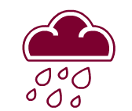
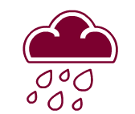

Сами по себе атмосферные осадки и изменения температур не несут опасности, значение имеет то, насколько они могут усилиться. Когда мелкий дождь становится затяжным или превращается в сильный дождь (ливень), возникает опасность подтопления. Усиление, поначалу легкого ветерка до шквалистого ветра повышает вероятность обрыва проводов. То же относится и к другим метеорологическим явлениям. С помощью переключателя «усильте» то или иное явление природы и посмотрите, при каких критических параметрах оно становятся опасным.
*Сдвиньте переключатель под иконкой, чтобы увидеть критические параметры.


 
